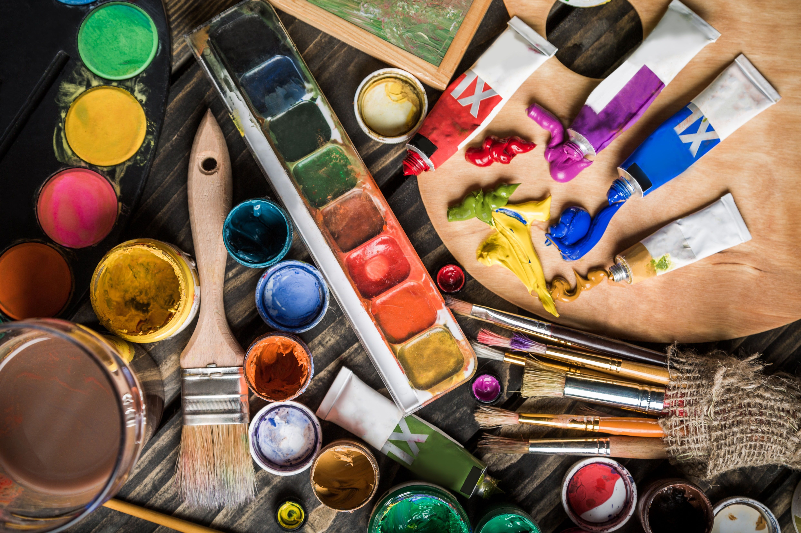
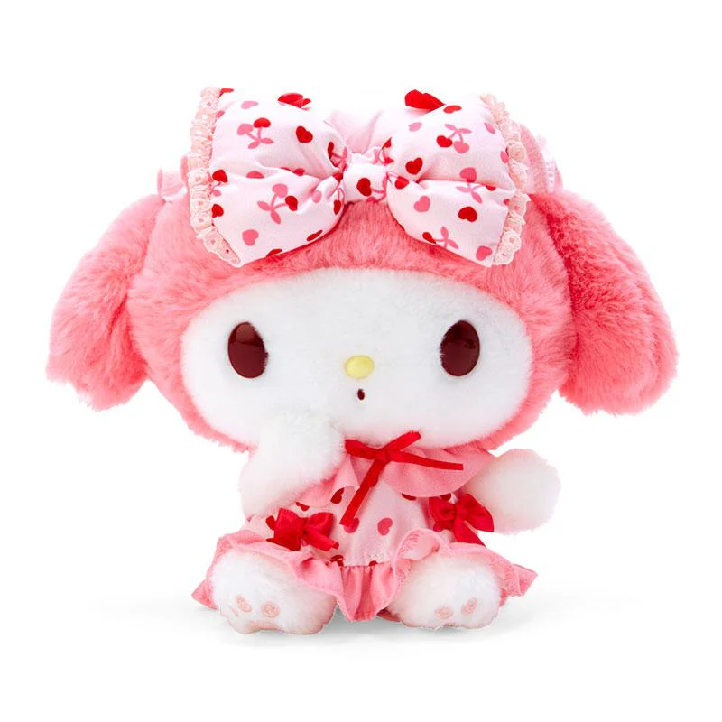
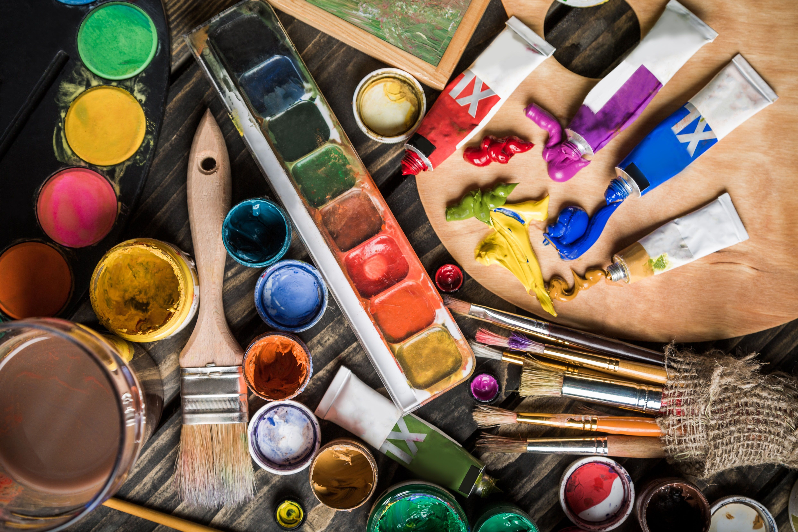
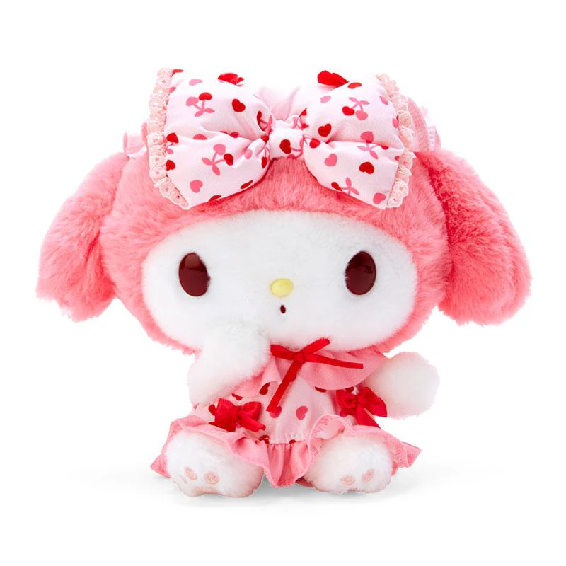

About Us
 



I started Faiza’s Cozy Art Corner because I wanted to make a space that reflected all the things that bring me peace, plushies, drawing, good vibes, and creativity. Growing up, I didn't have access to fancy supplies or big art stores, but when I finally discovered digital art, it felt like entering a whole new world.
At first, I struggled a lot. I was used to paper and pencil. But when I found Ibis Paint X, I slowly began to learn what brush tools did, how layers worked, and how digital drawing could be just as emotional and personal as traditional art. It was hard, but exciting. That experience of exploring something new and slowly finding your style is something I want others to feel too.
This “shop” is a cozy collection of all the things I would’ve loved to have when I was starting out. From plushies, to supplies, to events, and even fun DIYs, every part of this corner has something I can always cherish. Having a space where I can create freely, without pressure, helps me feel safe and understood. I hope it can be the same for someone else, even if just through a plush or a pen.
So yeah, even if this is a pretend business for a class. It’s what I can say that I had the opportunity to describe myself with. Thanks for stopping by, it means a lot. Have a nice day.